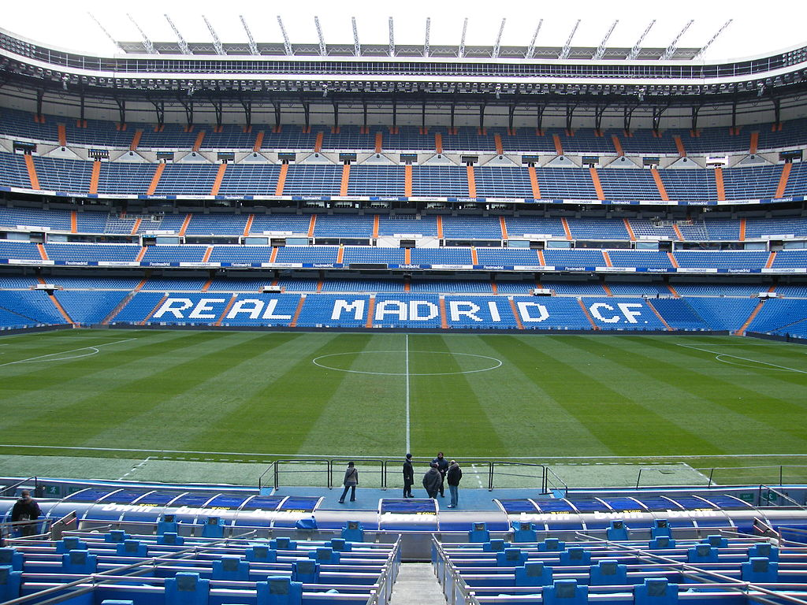
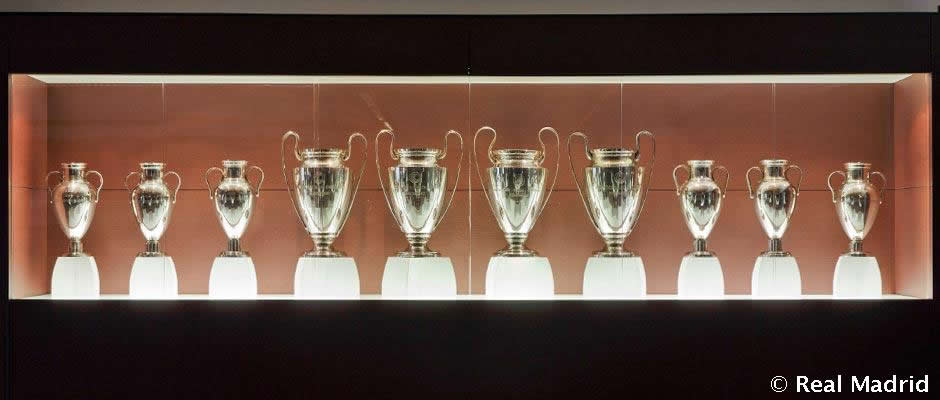

Real Madrid
Founded in 1902 as Madrid Football Club, the team has traditionally worn a white home kit since inception. The word Real is Spanish for Royal and was bestowed to the club by King Alfonso XIII in 1920 together with the royal crown in the emblem. The team has played its home matches in the 85,454-capacity Santiago Bernabéu Stadium in downtown Madrid since 1947.(wikipedia)
History of RM
In season 2014/2015 Real Madrid won its 10th Champions League Cup.This precious winning ranked the team to be the best team in the world.Their Italian coach was Carlo Ancelotti,who has a contract with Bayern Munich starting in 2016 summer.

RM has its own star since 2009 season
Cristiano Ronaldo ,Manchester united previous Legend,transefered to Spain to join one of the biggest teams in the world Real Madrid.This transefer was done by 82M to Manchester UTD to get Ronaldo to Real Madrid squad.


Career Timeline for 2014/2015:
- Pichichi Award
- European Golden Boot 2015
- IFFHS Trophy for Best striker on the planet and
World’s Biggest Goalscorer First Division - Fifa Ballon D'Or 2014
- Globe Soccer Best Player of the Year Award
Globe Soccer Fan's Favourite Player Award. - Cordão Autonómico de Distinção of the government of Madeira
{kind=link}
{kind=link}
{kind=link}
{kind=link}
{kind=link}
Thank you all for supporting our club Real Madrid